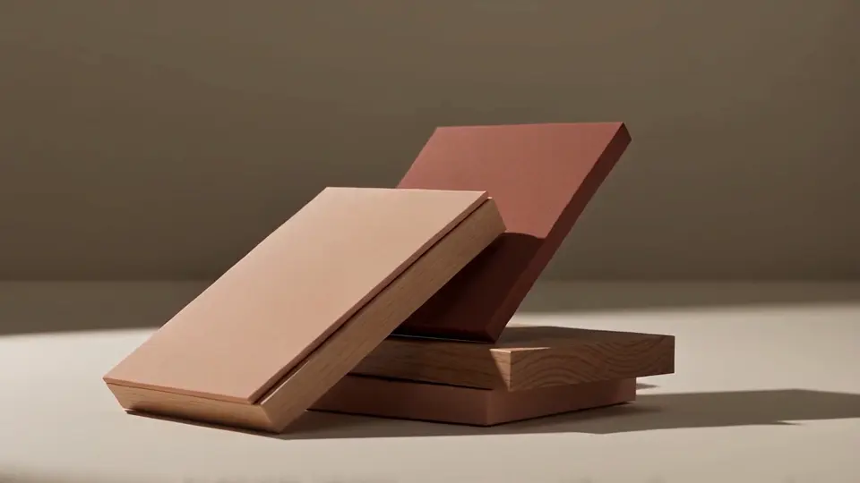
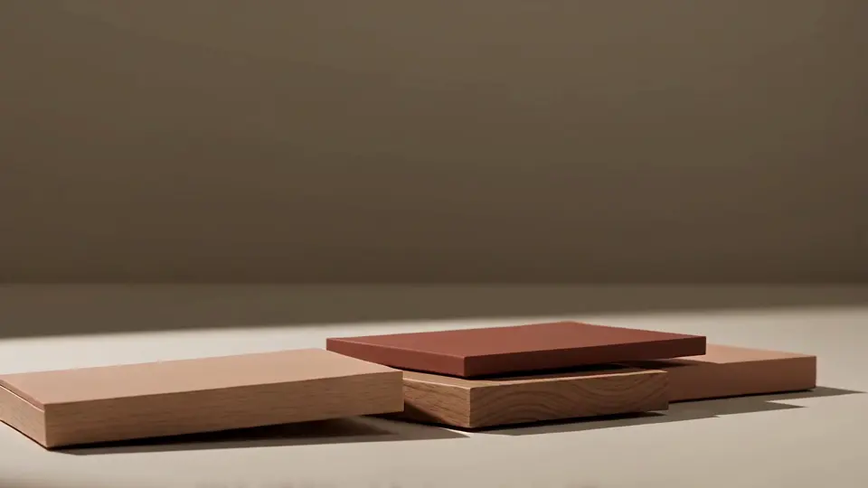
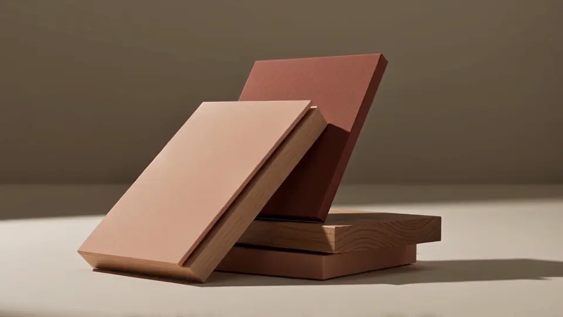
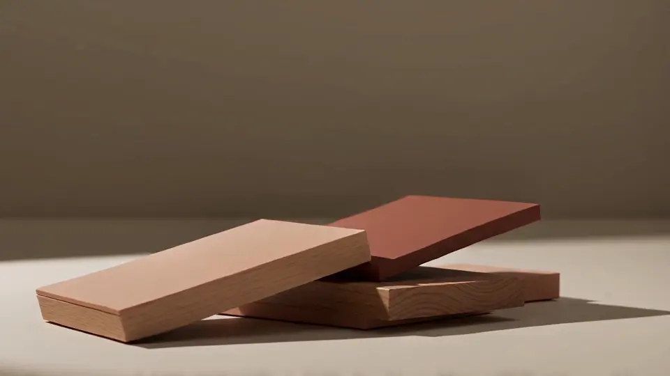

دراسة خامة تجريبية
الطاولة المنخفضة رقم 4
- مصنوعة من
- بلوط، فولاذ
- السعر
- من 1,240 £
- مدة التصنيع
- 8 أسابيع
- الصنع في
- بورتو، وتُوقَّع من الأسفل
لوح سميك من البلوط على قاعدة فولاذية بصدأ مصطنع، مدهونة بالزيت حتى تبدو دافئة.

دراسة خامة تجريبية
كرسي هارو للطعام
- مصنوعة من
- دردار، حبل ورقي
- السعر
- من 640 £
- مدة التصنيع
- 6 أسابيع
- الصنع في
- بورتو، وتُوقَّع من الأسفل
هيكل من الدردار المنحني بالبخار ومقعد من حبل ورقي منسوج يشتدّ مع الاستعمال.

دراسة خامة تجريبية
مقعد الملح
- مصنوعة من
- جوز
- السعر
- من 980 £
- مدة التصنيع
- 7 أسابيع
- الصنع في
- بورتو، وتُوقَّع من الأسفل
متران من خشب الجوز الصلب بمقعد مقعّر برفق، يتسع لثلاثة أشخاص إلى المائدة.

دراسة خامة تجريبية
كرسي الكثيب
- مصنوعة من
- صوف، ألياف جوز الهند
- السعر
- من 2,150 £
- مدة التصنيع
- 10 أسابيع
- الصنع في
- بورتو، وتُوقَّع من الأسفل
عميق ومنخفض، مكسوّ بصوف بوكليه غير مصبوغ فوق حشوة من شعر الخيل وألياف جوز الهند.
دراسة خامة تجريبية
مقعد فرن الفخار
- مصنوعة من
- فخار حجري
- السعر
- من 320 £
- مدة التصنيع
- 4 أسابيع
- الصنع في
- بورتو، وتُوقَّع من الأسفل
مشكّل من الفخار الحجري ومطلي بأكسيد الحديد ومحروق مرتين، فلا يتطابق لونان منهما.
دراسة خامة تجريبية
خزانة القصب
- مصنوعة من
- بلوط، روطان
- السعر
- من 2,780 £
- مدة التصنيع
- 12 أسبوعًا
- الصنع في
- بورتو، وتُوقَّع من الأسفل
أبواب من الروطان المنسوج يدويًا على هيكل من البلوط الصلب، بمقابض من النحاس الأصفر صُبّت في بورتو.
ست خامات نعرفها عن ظهر قلب
نشتري من المورّدين القلّة أنفسهم كل عام، ونستطيع أن نخبرك بأي غابة وأي قطيع وأي فرن.
اشترينا المقعد للممر، وبعد عام صار المكان الذي يجتمع عنده الجميع في كل فصل.
- قطع في المجموعة
- 31
- أكبر دفعة
- 40 قطعة
- صنّاع في الورشة
- 9
- الإصلاح
- مجاني لمدة 20 عامًا
البلوط الأوروبي
ينمو ببطء في مورفان بفرنسا. زيت شمعي صلب بلمسة مطفية.
الجوز الأمريكي
يُنشر في بنسلفانيا ويُجفَّف في بورتو. زيت طبيعي.
الدردار
يُقطع من غابة مُدارة في ديفون ويُحنى بالبخار يدويًا. ورنيش شفاف نصف لامع.
الصوف غير المصبوغ
يُغزل في بييلا بإيطاليا من قطيع واحد. دون معالجة.
الفولاذ المُصدَّأ
يُقطع في براغا ويُصدَّأ يدويًا خلال ثلاثة أيام. يُحمى بطبقة شمع.
الفخار الحجري
يُستخرج من أفيرو ويُحرق عند 1,240 درجة مئوية. طلاء من أكسيد الحديد.
اعثر على قطعتك
مصنوعة من
يعرض 6 من 6
- الطاولة المنخفضة رقم 4بلوط، فولاذمن 1,240 £8 أسابيع
- كرسي هارو للطعامدردار، حبل ورقيمن 640 £6 أسابيع
- مقعد الملحجوزمن 980 £7 أسابيع
- كرسي الكثيبصوف، ألياف جوز الهندمن 2,150 £10 أسابيع
- مقعد فرن الفخارفخار حجريمن 320 £4 أسابيع
- خزانة القصببلوط، روطانمن 2,780 £12 أسبوعًا
حدّثنا عن الغرفة.
تكفي بضعة أسطر عن المكان. سيردّ عليك أحد الصنّاع خلال يومي عمل بقطع تناسبه.